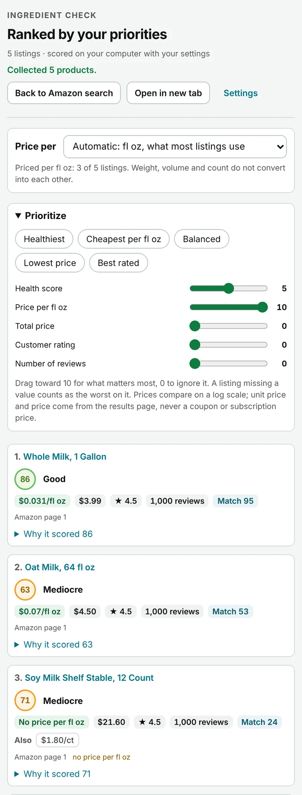

Everyday
Balanced, General wellbeing, Conventional nutrition, Additive-averse, Whole-food focused.
Features
A score on every grocery label you look at, the working behind it, and the tools to sort, compare and track what you buy. Scoring always runs on your computer.
Open a food product and a panel appears under the title with a score from 0 to 100, a verdict word (Excellent, Good, Mediocre, Poor or Avoid) and the processing level. The toolbar icon shows the same number for the tab you are on.
Click the panel to open the working. Rows are grouped as What's good, What hurt and Score limits, each with its points, so you can see which ingredient moved the number and by how much.


On a supported search page every food result gets a small score badge. Badges come from three places, in order: a score already saved on your computer, the shared certification data, and, when Rate search results and cart items is on, the product's own public page.
The Amazon cart shows a score on each item and a cart average under Shopping Cart and on the toolbar icon. It also rates the item on the page Amazon opens right after you add it to the cart.
On a supported Amazon grocery search, Amazon's own Sort by menu gets two more options. Choosing one opens the side panel with that search's listings ranked; Amazon's page is left as it is.
Press Alt+Shift+H on a search page to open the list sorted by score without the mouse. Settings → Sort can rate unscored listings while the panel fills and, if you choose, load more results pages (off by default, up to 500 listings).
Sorting is a preview. It runs on amazon.com, .co.uk, .ie, .ca, .com.au, .sg and .in. The unit price is Amazon's own when the results page shows one, otherwise worked out from the price and an unambiguous size or count in the title. It can be switched off in the toolbar popup.

Two people can read the same label and want different things. Pick the goals that describe you; the score changes to match. There are 20 goals in four groups, and you can combine them.
Balanced, General wellbeing, Conventional nutrition, Additive-averse, Whole-food focused.
Weight loss / cutting, Muscle gain / bulking, Maintenance, Recovery / rest day, Vitamins & minerals.
Strength training, Running / endurance, High-activity / athlete, Sedentary / low-activity, General fitness.
High protein, Low-carb, High-carb / performance, Sugar-conscious, Animal-based.
How a score is built explains what each goal changes.
Flags are a convenience, not a safety system. Always read the package.
The best available reading wins, and the panel says where it came from.
Certification data (organic, grass-fed, origin) comes from a small shared table that is requested a few times a day. The request carries nothing about the products you view.
Turn this on in setup or Settings and the extension imports the items on your Amazon.com order pages and scores them with your goals. A dashboard then shows monthly trends from what you actually bought.
Controlled tests cover the import; signed-in live validation was still pending at the last release. Read the full guide.
When two or more products have saved scores, compare them side by side in the popup, with no new requests.
Match your system, or choose a colour-blind-safe score palette and an accent. Text stays readable at WCAG AA contrast.
Choose how many settings to show, from Minimal to Everything. Hidden settings keep their values and keep working.
Settings back up through your browser's own sync and come back only when you click Restore. Google sign-in is optional.
The popup's report form previews the screenshot, settings and recent actions first. The extension sends nothing; you send the email.
The same engine runs in both desktop browsers. See install for the differences.